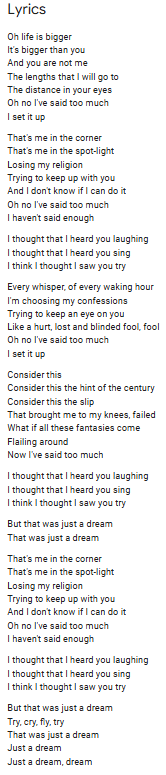

Track 7: Losing My Religion - R.E.M
Information:
Song Name: Losing My Religion
Artist(s): R.E.M
Extra Info: Recieved Grammy Award for best music video
Cover:
Video:
Lyrics:
Analysis / Reasoning:
Losing My Religion by R.E.M is a classic hit from the 90’s, describing a man who is struggling with self-sabotage. He is overthinking every action, and he describes himself as “losing his religion,” a clear allusion to losing something that he spent his whole life believing in. This song can be juxtaposed to Holden Caulfield’s character. After Holden Caulfield’s brother, Allie, died, Caulfield was very depressed. He “lost his religion” in terms of his mental sanity and his love for the world. In Chapter 14, Holden describes himself as “(Caulfield) felt like praying or something, when I was in bed, but I couldn’t do it. I can’t always pray when I feel like it. In the first place, I’m sort of an atheist. I like Jesus and all, but I don’t care too much for most of the other stuff in the Bible” (Salinger 110-111). Though this seems like an elementary comparison to Holden Caulfield, there is a hidden meaning behind this. If Holden Caulfield was raised as a Christian, and now he is partly atheist, he must have changed somewhere. There must have been a time where he “lost his religion” and stopped believing in Jesus. Whether he stopped believing in Jesus when Allie died, or whether he stopped believing when he was assaulted as a child, he must have encountered this philosophical argument: “If God is so great, then why do bad things happen?” Losing My Religion has many of such allusions: there are many clear easter eggs to Religion. However, The Catcher in the Rye also has allusions to religion. In page 111, Holden describes his hatred for the Disciples and how he likes “that lunatic and all, that lived in the tombs and kept cutting himself with stones.” (Salinger 111). Referencing the Bible (Matt 5-20), only Jesus saves “that lunatic,” showing the undertones that Holden hopes to be saved by some other power. Losing My Religion also describes the desire for salvation. The line “I haven’t said enough” (R.E.M 14) suggests the cycle of self-doubt and the overthinking that leads to thinking that the singer isn’t worthy of salvation.